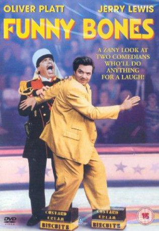
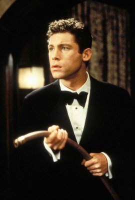
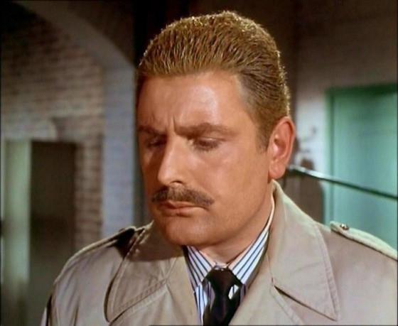
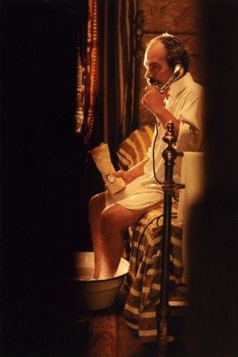
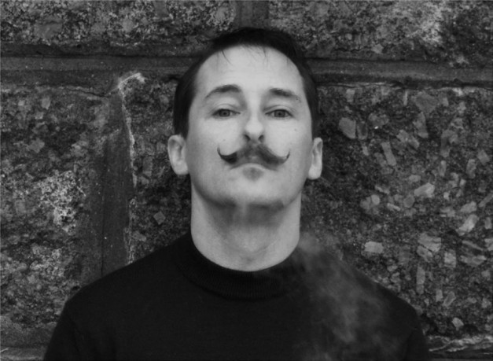

#6573 Funny Bones - Tödliche Scherze
Alternativ: Funny Bones
 
 IMDB-Wertung: 7.0 / 10
IMDB-Wertung: 7.0 / 10  Metascore: 0
Metascore: 0 
Tommy Fawkes wants to be a successful comedian but his Las Vegas debut is a failure. He goes back to Blackpool, UK, where his father, also a comedian started and where he spent the summers of his childhood. He starts to search for a partner, a comic relief, with whom he can be famous.
Jahr: 1995
Dauer: 62 Minuten
FSK: 12
Land: England Studio: BVHETonspuren: MPEG2 - ,
Untertitel:
Auflösung: SD (640x336) Größe: 694 MB
Genre: Drama, Komödie
Regisseur:  Peter Chelsom
Peter Chelsom
Drehbuch: Peter Chelsom
Soundtrack:
Darsteller:
 Oliver Platt als Tommy Fawkes
Oliver Platt als Tommy Fawkes Jerry Lewis als George Fawkes
Jerry Lewis als George Fawkes-  Lee Evans als Jack Parker
 Leslie Caron als Katie Parker
Leslie Caron als Katie Parker Richard Griffiths als Jim Minty
Richard Griffiths als Jim Minty Oliver Reed als Dolly Hopkins
Oliver Reed als Dolly Hopkins Ian McNeice als Stanley Sharkey
Ian McNeice als Stanley Sharkey- Peter Gunn als Nicky
 William Hootkins als Al
William Hootkins als Al-  Terence Rigby als Billy Man
- Ruta Lee als Laura Fawkes
 Peter Pamela Rose als Jenny
Peter Pamela Rose als Jenny-  Ticky Holgado als Battiston
- Richard Platt als Bellows
- Tony Barton als Comedian
- Tony Peers als Reporter
- Andy Rashleigh als Reporter
- Andy Thompson als Leo the Leprechaun
- Peter Martin als Skipper
-  Jason Redshaw als Barman , uncredited
 Miltos Yerolemou als Mime , uncredited
Miltos Yerolemou als Mime , uncredited- Sadie Corre als Poodle Woman
- George Carl als Thomas Parker
- Freddie Davies als Bruno Parker
- Christopher Greet als Lawrence Berger
- Gavin Millar als Steve Campbell
- Olivier Py als Barre
- Mouss als Poquelin
- Peter McNamara als Canavan
- François Domange als Pirard
- Harold Nicholas als Himself
- George Khan als Francesco
- Ian Rowe als Ringmaster
- Phil Atkinson als Policeman
- Nicholas Coppin als Policeman
- Jona Jones als Security Guard
- Mike Newman als Comedian
- Ruth Kettlewell als Camilla Powell
- Peter Morgan als Gofor
- Fred Evans als Mr. Pearce
- George Raistrick als Club Owner
- Micky Baker als Mayor
- Reg Griffiths als Reporter
- Duggie Chapman als Reporter
- Phil Kelly als Himself
- Peter Brande als Leo the Leprechaun
- Frank Harvey als Backward Talking Man
- Anthony Irvine als Iceman
- Eileen Bell als Doggyduo
- Rusty Goffe als Bagpipe Playing Dwarf
Datei: X:\1995\Funny Bones - Tödliche Scherze (1995, FSK12, 640x336).avi seit 12.07.2017
Festplatte: HD 1992-1995
 Es gibt insgesamt 85 Filme in der Gruppe '1995'
Es gibt insgesamt 85 Filme in der Gruppe '1995'